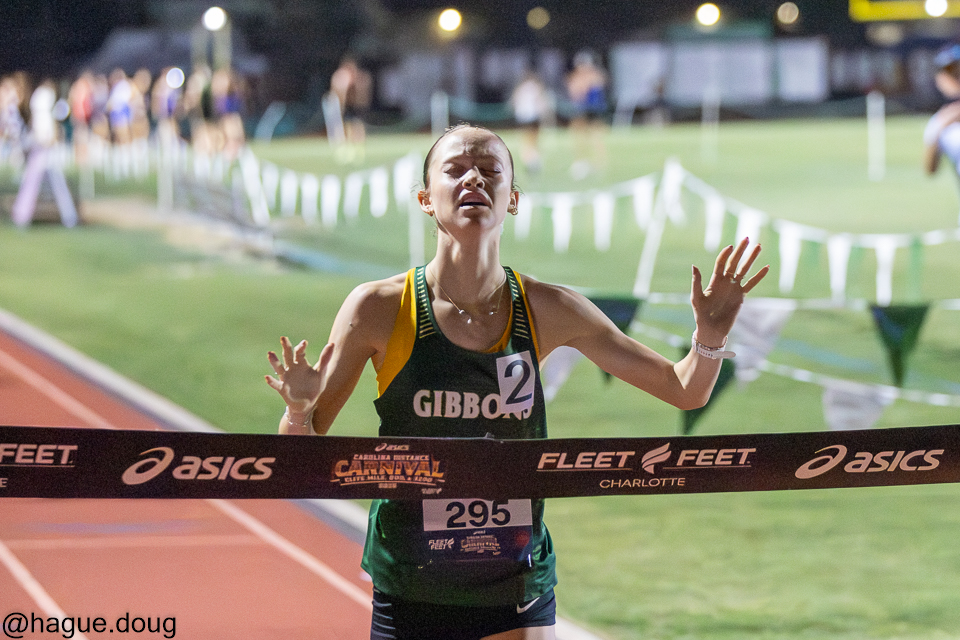

Carnival news
Announcements, recaps and the best distance running coverage from the ASICS Carolina Distance Carnival and our media partners.

ASICS Carolina Distance Carnival Moves To Jay M. Robinson In Concord For 2027
The ASICS Carolina Distance Carnival is set for April 16-17, 2027 at Jay M. Robinson High School in Concord, NC, home of a MONDO Super X 720 track with a steeplechase pit and a 3,500-seat lit stadium.

Kaitlyn Estep Doubles At The ASICS Carolina Distance Carnival, Winning The 800m And Breaking The Mile Record
Cardinal Gibbons sophomore Kaitlyn Estep won both the 800m and the Mile in loaded fields, running 4:36.56 in the Mile to break the Carnival record and beat 2025 Nike Outdoor Nationals Mile champion Lily Alder.

Behind Alder's World Record, Four More Middle School Girls Break 5:00 In The Mile
Five middle school girls broke 5:00 in the Mile at the ASICS Carolina Distance Carnival, led by Angelina Alder's 12-year-old world record and a 4:50.16 from North Carolina's Athena Pluchos.

Ten Of The Nation's Top 25 1600m Times Came From The ASICS Carolina Distance Carnival
As of April 19, 2026, ten of the 25 fastest high school 1600m times in the country came from the ASICS Carolina Distance Carnival, including three of the top four, and all ten top finishers in the boys Mile made the list.
Angelina Alder Sets 12 Year Old Mile World Record In 4:40.98
A Utah seventh grader won the middle school mile at the ASICS Carolina Distance Carnival in 4:40.98, beating a 12-year-old mile world record that had stood since 2005. Her time also cleared the 13-year-old world record.

Ferguson Runs Down Skandera On The Final Lap As 16 Boys Break 9:00 In The 3200m
Michael Ferguson ran down Daniel Skandera on the final lap to win the boys 3200m in 8:44.73 at the ASICS Carolina Distance Carnival, and 16 boys broke 9:00, including Oscar Whiteley from the second-fastest heat.